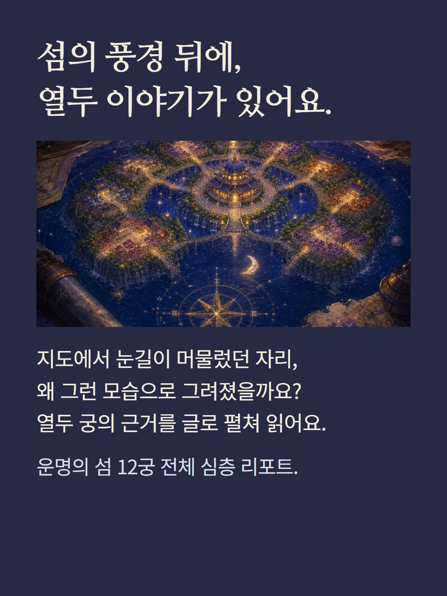
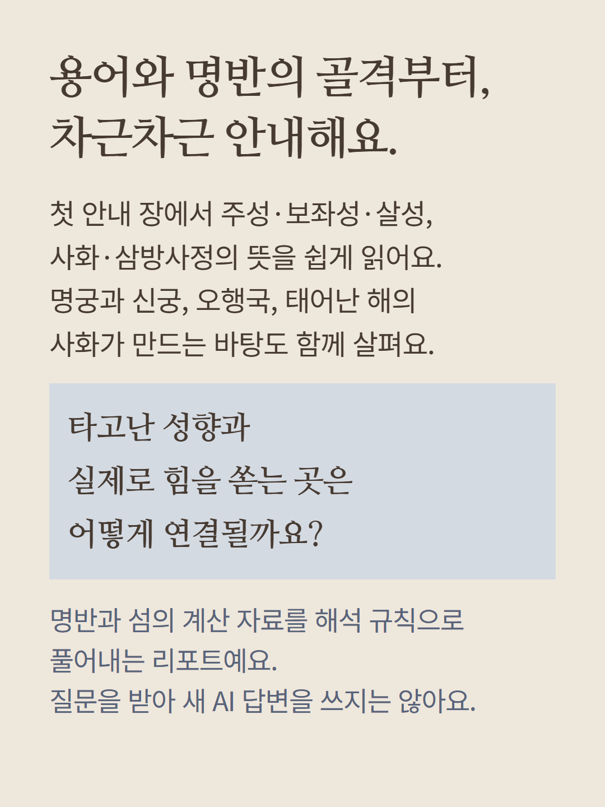
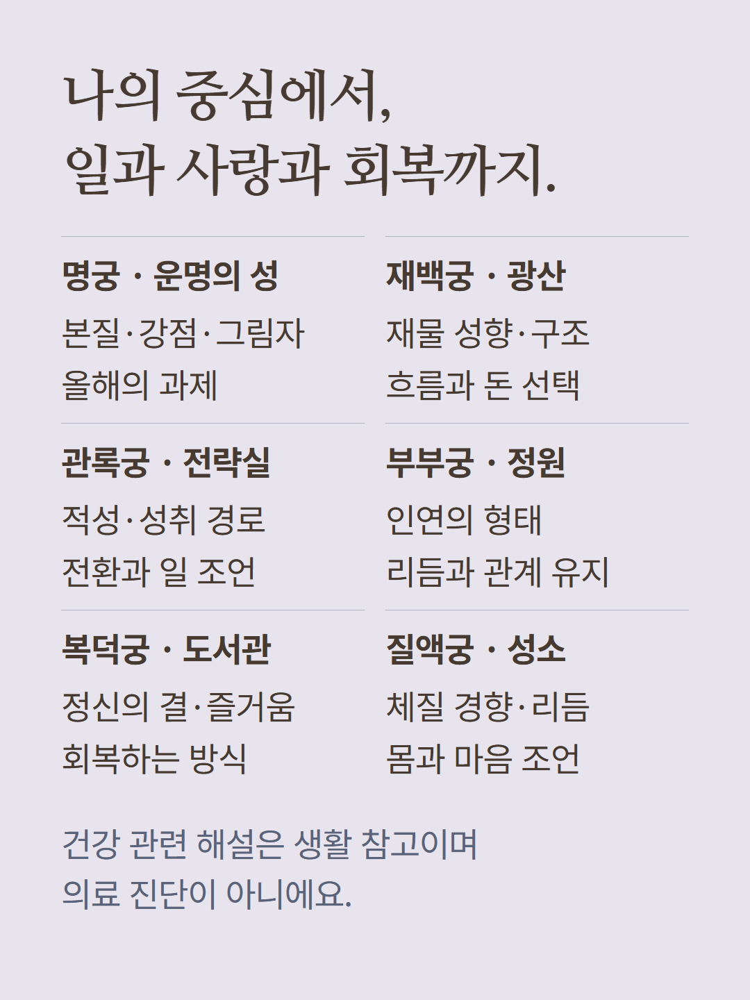
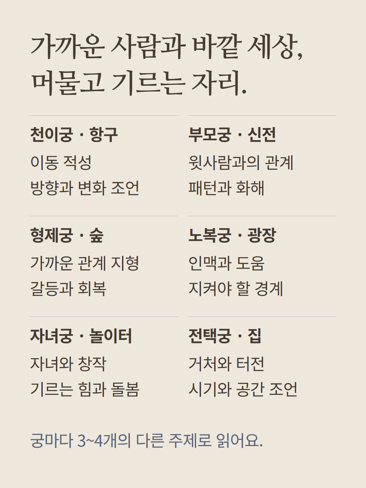
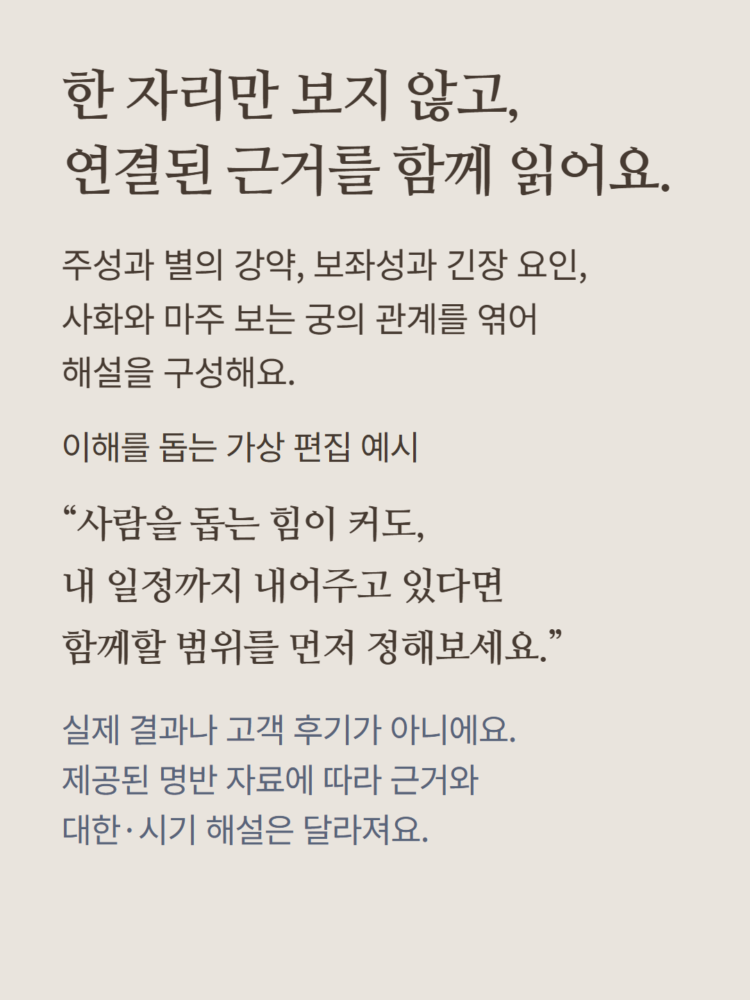
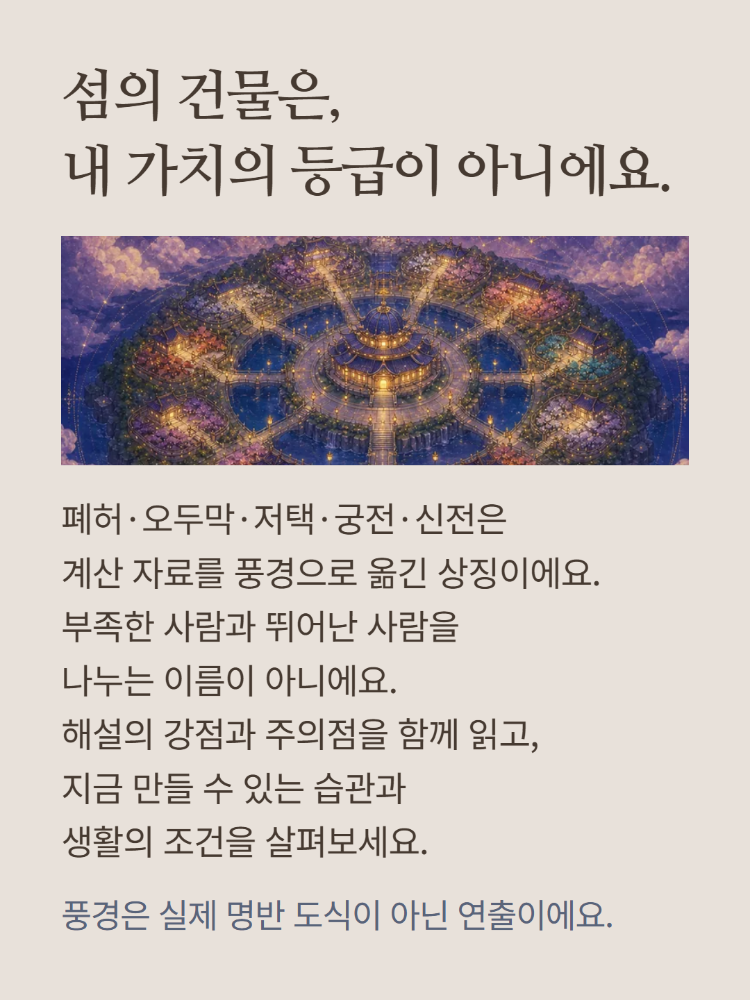
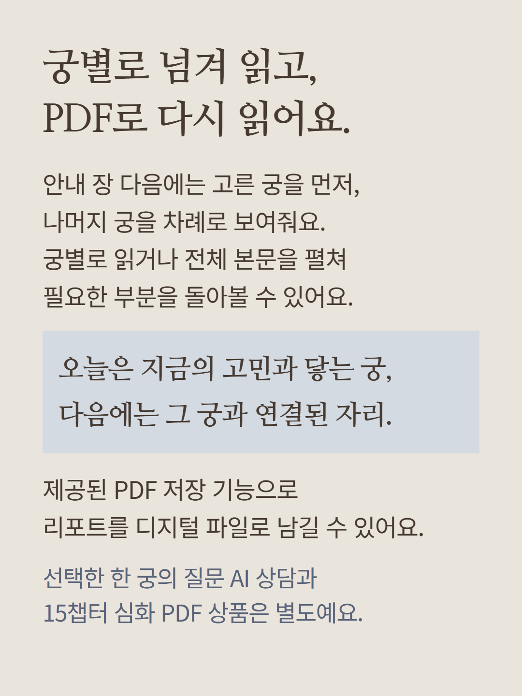
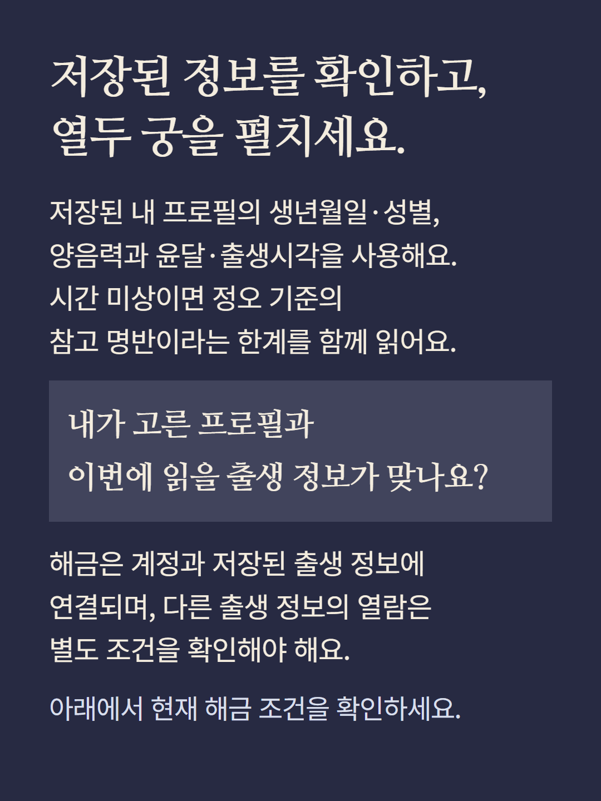

저장된 본인 프로필의 출생 정보로 명반과 섬의 청사진을 계산해 해석 규칙으로 풀어내는 정적 리포트입니다. 안내 장의 용어·명반 골격에 이어12궁 각각3~4개 주제를 제공합니다. 주성강약·보좌성·긴장요인·사화·삼방사정과 제공된 대한자료를 읽으며,궁별 보기·전체펼침·PDF저장을 지원합니다. 궁과 자료에 따라 내용은 달라집니다. 계정과 저장된 출생정보를 기준으로 해금하므로 저장프로필이 필요하며 다른출생정보는 별도조건을 확인합니다. 시간미상은 정오참고명반의 한계가 있습니다. 건물단계는 상징표현으로 사람의 가치·성공등급이 아니며,건강·재물·시기는 진단이나성과보장이 아닙니다. 새AI답변을 생성하는 한궁상담과15챕터 심화PDF상품은 별도입니다. 예시는 가상편집으로 실제결과·후기가 아니며 이미지는 섬의 분위기연출입니다. 현재해금조건을 확인해 주세요.